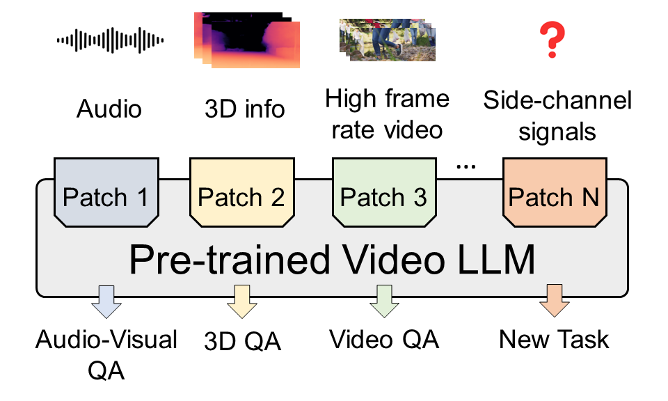
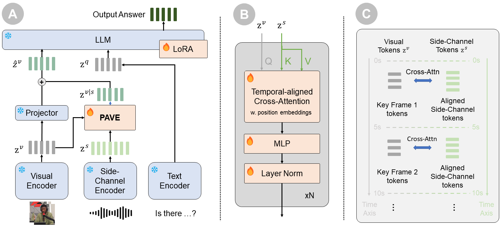
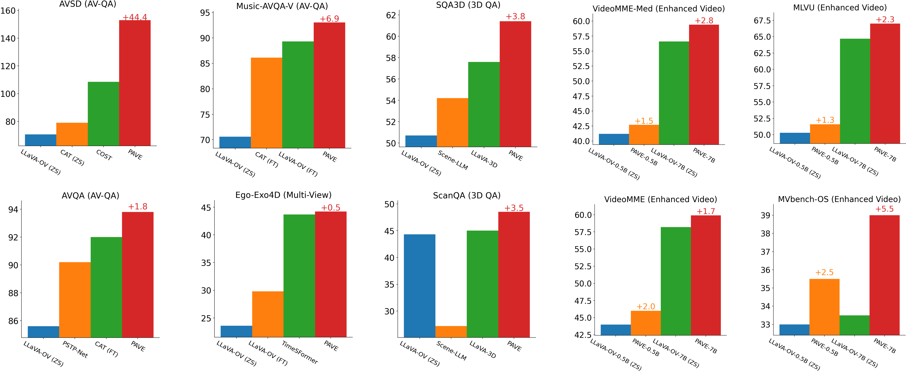
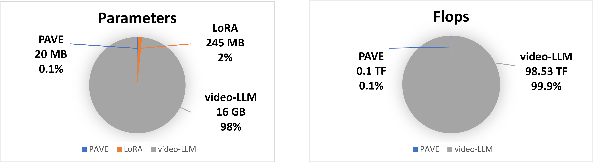
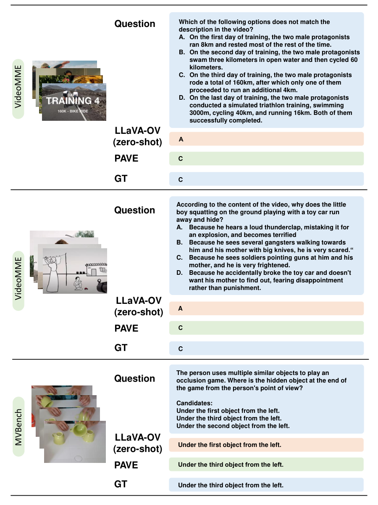

Problem
A strong video-language backbone does not directly accept every modality or data type available in a downstream task.
CVPR 2025 · Video understanding
1 University of Wisconsin–Madison2 The Chinese University of Hong Kong
Lightweight patches extend pretrained video-language models with audio, 3D cues, additional viewpoints, and dense video frames.

One framework, multiple signals
Pretrained video large language models can reason about visual content, but many downstream tasks provide useful information beyond the video frames they were trained to process. Audio reveals what can be heard, depth and camera poses describe three-dimensional space, and additional viewpoints or densely sampled frames expose details that sparse observations can miss.
PAVE adapts these models through lightweight patches. It brings side-channel information into the model’s existing visual tokens while preserving the backbone architecture and pretrained weights. The same design supports audio-visual question answering, 3D reasoning, multi-view video understanding, and enhanced video question answering.
A strong video-language backbone does not directly accept every modality or data type available in a downstream task.
Use a compact cross-attention patch to align and fuse side-channel features with the model’s visual tokens.
Audio, 3D cues, exocentric video, and densely sampled frames extend the same pretrained video-language model.
Patching and adapting
PAVE connects a video-language backbone to an encoder for the additional signal. The patch aggregates the side-channel evidence into the visual representation, so the language model can use that evidence through its existing input interface.

Extract visual tokens from key video frames and encode the available side-channel signal with a suitable encoder.
Align the signals along time. Visual tokens act as queries; side-channel features provide the keys and values for cross-attention.
Add the patch output to the visual representation and pass the updated tokens to the language model for task-specific reasoning.
The patch preserves the pretrained backbone weights. The released task adaptations also use LoRA; patch overhead and total trainable parameters are distinct quantities.
Four ways to extend video understanding
PAVE is evaluated with LLaVA-OneVision backbones at 0.5B and 7B scales. The results below cover the released task-specific checkpoints, with each side channel chosen to supply information relevant to the task.

Higher is better for all metrics below. Accuracy and exact match are reported in percent; CIDEr and the other captioning metrics retain the paper’s reported scale. Tables scroll horizontally on smaller screens.
Audio features supplement the video frames on AVSD, AVQA, and Music-AVQA.
| Benchmark | Metric | PAVE 0.5B | PAVE 7B |
|---|---|---|---|
| AVSD | CIDEr | 134.5 | 152.9 |
| AVQA | Accuracy | 90.4 | 93.8 |
| Music-AVQA · Audio | Accuracy | 77.3 | 79.7 |
| Music-AVQA · Visual | Accuracy | 89.8 | 93.0 |
| Music-AVQA · Audio-Visual | Accuracy | 74.1 | 78.0 |
| Music-AVQA · Overall | Accuracy | 78.8 | 82.3 |
A separate 7B checkpoint combining audio with densely sampled frames reaches 160.0 CIDEr on AVSD after two training epochs; the audio-only AVSD checkpoints above use one epoch.
Depth and camera-pose information provide spatial context for ScanQA and SQA3D.
| Benchmark | Metric | PAVE 0.5B | PAVE 7B |
|---|---|---|---|
| ScanQA | CIDEr | 84.2 | 103.4 |
| ScanQA | BLEU-4 | 13.1 | 16.0 |
| ScanQA | METEOR | 17.0 | 19.9 |
| ScanQA | ROUGE-L | 42.1 | 49.0 |
| ScanQA | EM@1 | 23.1 | 29.1 |
| SQA3D | EM@1 | 51.1 | 59.0 |
EM@1 reports standard exact match. Additional evaluation scores and settings are documented in the paper and repository.
Exocentric views complement the egocentric video when estimating a demonstrator’s proficiency on Ego-Exo4D.
| Benchmark | Metric | PAVE 0.5B | PAVE 7B |
|---|---|---|---|
| Ego-Exo4D | Accuracy | 32.4 | 44.2 |
Densely sampled video features add temporal detail to the backbone’s sparse key-frame representation. PAVE improves average accuracy over the corresponding base model on VideoMME, MVBench, and MLVU.
| Benchmark | Split | PAVE 0.5B | PAVE 7B |
|---|---|---|---|
| VideoMME | Short | 57.8 | 71.1 |
| VideoMME | Medium | 42.7 | 59.4 |
| VideoMME | Long | 37.4 | 49.2 |
| VideoMME | Average | 46.0 | 59.9 |
| MVBench | Average | 46.6 | 58.0 |
| MLVU | Overall | 51.6 | 67.0 |
Sources: released checkpoint results and Table 3 of the paper. See the paper for the complete benchmark evaluation.
A small patch to a pretrained model
The patch updates existing visual tokens rather than expanding the language model’s input with all side-channel tokens. In the illustrated 7B setting, PAVE adds approximately 20 MB of patch weights and 0.1 TFLOPs—about 0.1% of the model’s weight footprint and reported inference computation.

These figures describe the patch, not all trainable parameters. Following the paper’s accounting, FLOPs include the patch and language model and exclude the visual encoder and side-channel encoder. Costs depend on the task and input configuration; see Appendix B.5 for the measurement assumptions.
Seeing more of the story
Densely sampled frames help PAVE recover details that sparse visual inputs can miss. These examples from the paper compare PAVE with zero-shot LLaVA-OneVision on VideoMME and MVBench.

Explore and reproduce
Read the method, experiments, and supplementary analysis.
Implementation, environment setup, training scripts, and evaluation instructions.
Released 0.5B and 7B task adaptations, including multiple side channels.
Annotations, pre-extracted features, and preparation guides for the evaluated tasks.
Annotations and features · Video resources · Preparation guides
Use the Python demo and downloadable samples to try PAVE locally.
Questions about the research or use of PAVE can be directed to Zhuoming Liu.
The repository specifies academic use only; contact the authors for commercial use.
CVPR 2025
If PAVE is useful for your research, please cite our paper.
@inproceedings{liu2025pave,
title={PAVE: Patching and Adapting Video Large Language Models},
author={Liu, Zhuoming and Li, Yiquan and Nguyen, Khoi Duc and Zhong, Yiwu and Li, Yin},
booktitle={Proceedings of the Computer Vision and Pattern Recognition Conference},
pages={3306--3317},
year={2025}
}